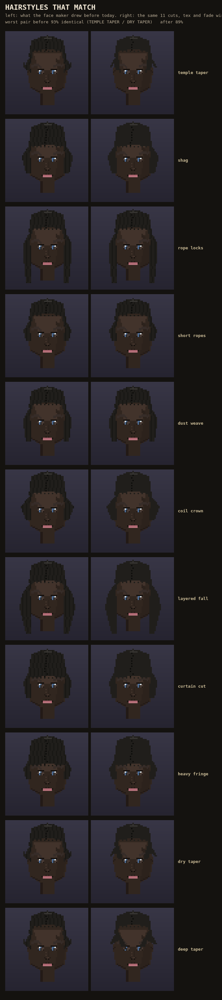

The hair picker was showing the right 11 names but losing two of its six dials every time you clicked one, so three tapered cuts all drew the same short cap and one cut lost its texture completely. Both are wired now, and the picker also stops guessing at a texture you never asked for.
Checked on real pixels: before, the two most confused haircuts were 93% identical to each other; after the fix the worst pair is 89%. Your own approved face does not move -- the fade only ever acts on a cut that sets one.

This is a real fix, already in the game, not a vote -- there's a gap left (a few pairs still read close), named honestly in the record.